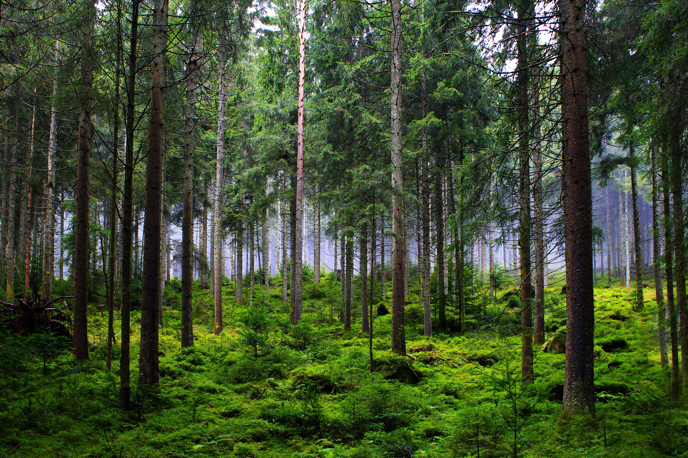

La deforestación es una de las principales amenazas para el equilibrio ecológico del planeta...
Aún podemos frenarla mediante políticas de conservación, control de la tala ilegal y consumo responsable...

Los árboles no solo nos proporcionan oxígeno, también filtran el aire, regulan el clima y previenen inundaciones.
Muchas comunidades indígenas dependen de los bosques para su cultura y medicina tradicional.

Las causas más comunes incluyen:
- Agricultura extensiva: Cultivos y ganadería.
- Industria maderera: Tala descontrolada.
- Urbanización: Expansión de ciudades.
- Incendios forestales: Muchos provocados por el hombre.

La pérdida de bosques afecta el aire, el agua, la biodiversidad y contribuye al cambio climático y la desertificación.

- Apoyar proyectos de reforestación
- Consumir productos sostenibles
- Reducir uso de papel
- Educar a otros
- Participar en campañas ecológicas